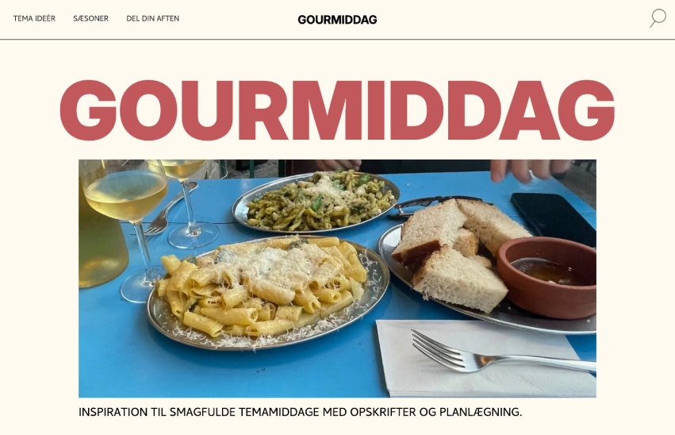

I dette tema arbejdede jeg med user experience design (UX) og digitale brugergrænseflader (UI). Jeg lærte om UX/UI-konventioner og de forskellige værktøjer og metoder, der bruges i research, design og testprocessen. Temaet gav mig en dybere forståelse af samspillet mellem brugere og brugergrænseflader, og hvordan man kan bruge teorier og værktøjer til at udvikle digitale produkter.
Fokus i dette tema var på research og det forarbejde, der kræves for at udvikle et gennemarbejdet produkt. Jeg lærte at analysere målgrupper, udarbejde user stories og interviews. For at strukturere og visualisere processen brugte jeg programmet Figma, hvor jeg arbejdede med design associationer, moodboards, style tiles og prototyper. Min designproces startede med idegenerering, hvor jeg fandt frem til at lave en hjemmeside, der tilbyder inspiration til temamiddage. Målet var at skabe et fællesskab, hvor brugerne kan finde idéer til mad, drikkevarer, dekorationer og dele deres egne oplevelser.
Herefter gik jeg i gang med research og udvikling
Overgangen fra design til kode var udfordrende, især da jeg skulle lave et layoutdiagram og sikre, at mit site blev bygget korrekt med en mobile-first tilgang. Det var en frustrerende, men lærerig proces, hvor jeg fik designet overført til HTML, CSS og javascript med kun få ændringer.
Min største udfordring var at få min burgermenu til at fungere, især fordi jeg ønskede at placere mit logo i midten med navigationen til venstre. Selvom det krævede en del eksperimentering, blev resultatet vellykket.
Under temaet brugte jeg tests, som 5-sekunders tests og tænke-højt tests for at vurdere mine designvalg. Testresultaterne viste blandt andet, at mit visuelle hierarki fungerede godt. Brugerne forstod formålet med siden på få sekunder, takket være strategisk placering af vigtig information og brug af farver til at fremhæve centrale elementer.
Jeg er tilfreds med mit endelige produkt og modtog både ros og konstruktiv feedback ved præsentationen. Temaet lærte mig vigtigheden af tests og gav mig indsigt i, hvordan jeg kan forbedre mine fremtidige designs. Jeg blev især opmærksom på betydningen af heuristiske tests og bedre opsætning af brødtekster med kortere linjer.